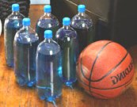

Ideas for creative and fun-time toddler activities are endless! Toddlers and pre-schoolers are so easy to have fun with! At this bright young age, kids have a natural inclination to turn just about any object into a toy or a game. Young children love doing projects with parents, siblings, friends and on their own. Important! Beware of choking hazards! Some toddler activities include small pieces and objects. Please make sure to observe small children who may put objects in their mouths at ALL TIMES! Clink-clank goes the money in the bank! This activity includes 2 fun projects. Making the piggy-bank ![]() Use an empty container with a lid – plastic containers will have a duller sound that metal ones when the coins hit the bottom. DO NOT USE GLASS! Cut a slit in the lid large enough for coins to be pushed through. The bank can be covered with paper – use markers and stickers for a mess-free project. You can also cut up shapes from foil, colored paper etc. and a more messy gluing project can be accomplished! Playing with the bank Give your child 10 coins to put into the bank. Young kids love pushing the coins into the bank and hearing the sound each one makes! Playing with Playdough ![]() This activity can start with a project for Mom and produces hours of fun for kids of all ages. When stored properly, it can last for weeks and even months! This activity can start with a project for Mom and produces hours of fun for kids of all ages. When stored properly, it can last for weeks and even months!How to make Playdough Make a Playdough kit! Gather up plastic knives, a rolling pin, cookie cutters, and small plastic toys and keep them in a plastic basket. Young painters at work! One of the favorite toddler activities is painting masterpieces with any type of paint including finger-paints, watercolors, and poster paints. Use paint brushes of all sizes. Try other paint projects like painting with different sized sponges, q-tips, and ice-cream sticks. Foot painting Sit your toddler down and let him paint with his toes! Marble painting Place a piece of paper in the bottom of a box. Put 2 marbles in a container of paint. Have your toddler scoop the marbles out of the paint and drop them into the box. When your toddler moves the box around, the marbles paint a very artistic painting! Shaving cream painting Spray a clean surface with shaving cream and your toddler will have a blast finger-painting! String painting Cut up different lengths of yarn. Place them in a pie pan with paint. Have your toddler pull out the string and place it on a sheet of paper. When she pulls the string it will create an interesting painting. How to make homemade paint from Loveyourbaby.com How to make finger paint from Loveyourbaby.com How to make edible paint from Loveyourbaby.com Plastic Bottle Bowling All you need to take your toddler bowling are 10 empty plastic bottles and a ball. You can keep it simple or fill the bottles with sand, rice, or colored water to weight them down a bit. Try different sized balls... a tennis ball, soccer ball, or basketball. Part of the fun is setting up the "pins" in true bowling alley style! Holy Punching Paper! Give toddler an easy-to-use hole-puncher and strips of colorful paper. Make sure to collect the colorful little circles for later projects! Float your boat! Fill up a large bucket or baby bath with water. Water play with floating toys and boats.Lace it up! Cut out shapes from cardboard and punch holes around the edges. Use yarn with a taped “needle” end. Teach your toddler how to sew in and out of the holes.Beach at home! Fill a wide, rectangular container with sand or rice. Give your toddler little cups spoons, cars, and trucks to play with.Rainy-day playground at home! Make a tunnel of chairs. Place a sheet over a small table or some chairs. Chalk it up to fun! Give colorful chalk for decorating the sidewalk or driveway.Blow some bubbles! Blow bubbles outdoors or in the bathtub. Kids love to watch bubbles floating in the air. Popping bubbles is very fun too! Bubble-blowing is an activity that children of all ages enjoy. It's a great idea to bring your bottle of bubbles to the beach or to the park too!Make your own bubbles for toddler activities from Loveyourbaby.com Box of magnetic energy! Use an empty metal box or container such as a cookie tin. Collect magnets of all shapes and sizes and metal object like screws, nuts, and bolts. Children learn about magnets and have fun! Important! Beware of choking hazards! Some toddler activities include small pieces and objects. Please make sure to observe small children who may put objects in their mouths at ALL TIMES! Painting that cleans up! This outdoor painting activity is especially fun in the warm summer months. Give your child a bucket of water and a paint brush to paint the sidewalk and outdoor walls. Very clean activity.Indoor sports! Use a bucket and some bean-bags. Child shoots to get bean-bags into the bucket.Play and bake! Instead of Playdough use cookie-dough. When the fun is done bake – and eat!Cookie Painting! This great activity combines 3 childhood favorites – playing with dough, painting, and eating!How to make and paint sugar cookies from Loveyourbaby.com Paint-able peanut butter cookies recipe from Loveyourbaby.com Baby-books-guide.com can help you find the right books for your child. Pouring! Use different materials such as water, rice or sand. Give your child a plastic measuring cup full of rice to pour through a colander, funnel, or into different sized cups.Gluing is fun! Give your child a plate of rice, grains, colorful cereal, and un-popped popcorn to glue onto paper or onto empty toilet-paper rolls. Older children will enjoy gluing materials inside their names – write in big block letters. Important! Beware of choking hazards! Some toddler activities include small pieces and objects. Please make sure to observe small children who may put objects in their mouths at ALL TIMES!  
| ![XML RSS]()


![Add to My MSN]()
![Subscribe with Bloglines]()